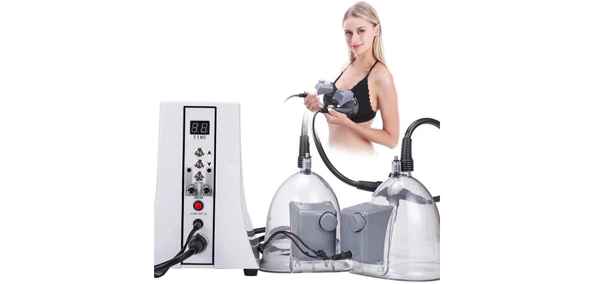

Laser Lipo tretman je jedinstvena procedura koja se individualno planira kako bi se zadovoljile specifične potrebe i ciljevi pacijenta. Zadivljujući rezultati Laser Lipo tretmana dokazuju da je to metoda koja pokazuje zadovoljavajuću alternativu hiruškoj lipolizi.
Kako muškarci i žene stare, koža progresivno počinje da gubi elastičnost i može doći do stvaranja neželjenih lokalizovanih masnih naslaga. Primena dijete i fizička aktivnost mogu biti od pomoći u održavanju telesne težine, ali osobama je dosta teško da zategnu opuštenu kožu i umanje masne naslage bez pomoći lekara. U prošlosti, liposukcija i lifting operacije su predstavljale jedini metod redukcije masnih naslaga i istovremenog zatezanja kože, međutim, poslednjih godina tehnološki napredak je omogućio razvoj nehiruških metoda za zatezanje kože, kao što je Laser Lipo tretman.
Laser Lipo tretman je najsavremeniji neinvazivni, nehiruški metod za preoblikovanje tela koji istovremeno umanjuje masne naslage i zateže kožu. Laser Lipo tretman se može sprovesti na bilo kom delu tela, a najčešće se koristi za regiju abdomena, bokova, ruku, gluteusa, leđa i butina. Tretman obezbeđuje glatku i zategnutu kožu, umanjenje i preoblikovanje masnih naslaga, umanjuje pojavu celulita, poboljšava elastičnost kože, bez neophodnog oporavka.
Efekti Laser Lipo tretmana su istovremeno i trenutni i dugotrajni Prosečno umanjenje obima od 7-8cm može biti postignuto nakon adekvatnog broja Laser Lipo tretmana
Nehiruški, neinvazivni , bezbolni tretman posle koga ce te se osecati srecno I zadovoljno a Vasa koza I telo ceVam biti zahvalni na tome. U salonu “Mitra” dobicete tretman koji ce zadovoljiti sve vase potrebe za ocuvanjem svezeg I mladalackog izgleda Vase koze I tela. Na Vama je samo da postujete savete naseg strucnog terapeuta I da se opustite uz prijatnu atmosferu u nasem studiju “Mitra “.
– HumoralniOd velike važnosti je i aktiviranje bazičnog regulatornog sistema koji povezuje celi organizam u jednu celinu.
Svaka terapija traje oko 30- 60 minuta, a promene možete da vidite već posle trećeg tretmana, iako se preporučuje pun ciklus od 10-20 tretmana za zadovoljavajuće rezultate. Tretman maderoterapije počinje sa masažom, koja vam omogućava da pripremite kožu i uklonite akumulirane masnoće. Zatim terapeut primenjuje eterična ulja sa ciljanim dejstvima i konačno, kreće masaža sa drvenim priborom.